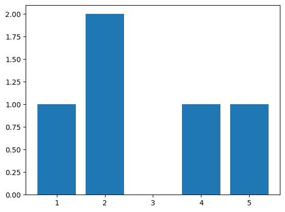

empiricaldist plotting functions#
import numpy as np
import pandas as pd
import matplotlib.pyplot as plt
from empiricaldist import Hist
hist = Hist.from_seq([1, 2, 2, 4, 5])
hist.bar(label='hist')
plt.legend;

hist.plot(label='hist')
plt.legend();
Pmf#
from empiricaldist import Pmf
pmf = Pmf.from_seq([1, 2, 2, 4, 5], name='example')
pmf.plot()
plt.legend();
pmf.bar()
plt.legend();
pmf.plot()
plt.legend();
cdf = pmf.make_cdf()
cdf.plot()
plt.legend();
cdf.step()
plt.legend();
surv = cdf.make_surv()
surv.plot()
plt.legend();
surv = cdf.make_surv()
surv.step()
plt.legend();
haz = surv.make_hazard()
haz.plot()
plt.legend();
haz.bar()
plt.legend();
Replicating a problem with plotting Pmfs#
unbiased = np.array([ 5, 6, 12, 7, 8, 6, 6, 9, 8, 4, 3, 5, 5, 7, 5, 7, 4,
4, 3, 6, 3, 5, 10, 1, 7, 4, 8, 2, 9, 6, 5, 5, 9, 11,
11, 3, 9, 1, 10, 1, 6, 6, 5, 8, 7, 7, 4, 7, 2, 1, 3,
1, 6, 3, 1, 1, 2, 2, 1, 2, 2, 1])
pmf = Pmf.from_seq(unbiased)
pmf.bar(label='')
from scipy.stats import poisson
mean = np.mean(unbiased)
qs = np.arange(1, 13)
ps = poisson.pmf(qs, mean)
plt.plot(qs, ps, color='C1', label='model')
[<matplotlib.lines.Line2D at 0x7f9f117d75b0>]
pmf.bar()
plt.plot(qs, ps, color='C1', label='model')
[<matplotlib.lines.Line2D at 0x7f9f114a1600>]
Replicating another problem#
from os.path import basename, exists
def download(url):
filename = basename(url)
if not exists(filename):
from urllib.request import urlretrieve
local, _ = urlretrieve(url, filename)
print("Downloaded " + local)
download("https://github.com/AllenDowney/DataScience/raw/master/data/ANSURIIFEMALEPublic.csv")
ansur_female = pd.read_csv("ANSURIIFEMALEPublic.csv", encoding="ISO-8859-1")
from empiricaldist import Pmf
pmf_height = Pmf.from_seq(ansur_female["Heightin"])
pmf_height.bar()
Command line example#
from empiricaldist import Pmf
# Create a PMF object
pmf = Pmf.from_seq([1, 2, 2, 3, 5])
# Make the other representations
cdf = pmf.make_cdf()
surv = cdf.make_surv()
hazard = surv.make_hazard()
# Look up quantities
print(pmf(4))
print(cdf(4))
print(surv(4))
print(hazard(4))
# Cdf and Surv provide inverse lookups
print(cdf.inverse(0.5))
print(surv.inverse(0.5))
0
0.8
0.19999999999999996
0
2.0
2.0
Copyright 2019 Allen Downey
BSD 3-clause license: https://opensource.org/licenses/BSD-3-Clause